6 Chapter 6
#-*- R -*-
# initialization
library(nlme)
options(width = 65, digits = 5)
options(contrasts = c(unordered = "contr.helmert", ordered = "contr.poly"))
#pdf(file = "ch06.pdf")
# Chapter 6 Nonlinear Mixed-Effects Models:
# Basic Concepts and Motivating Examples
# 6.1 Indomethicin Kinetics
plot(Indometh)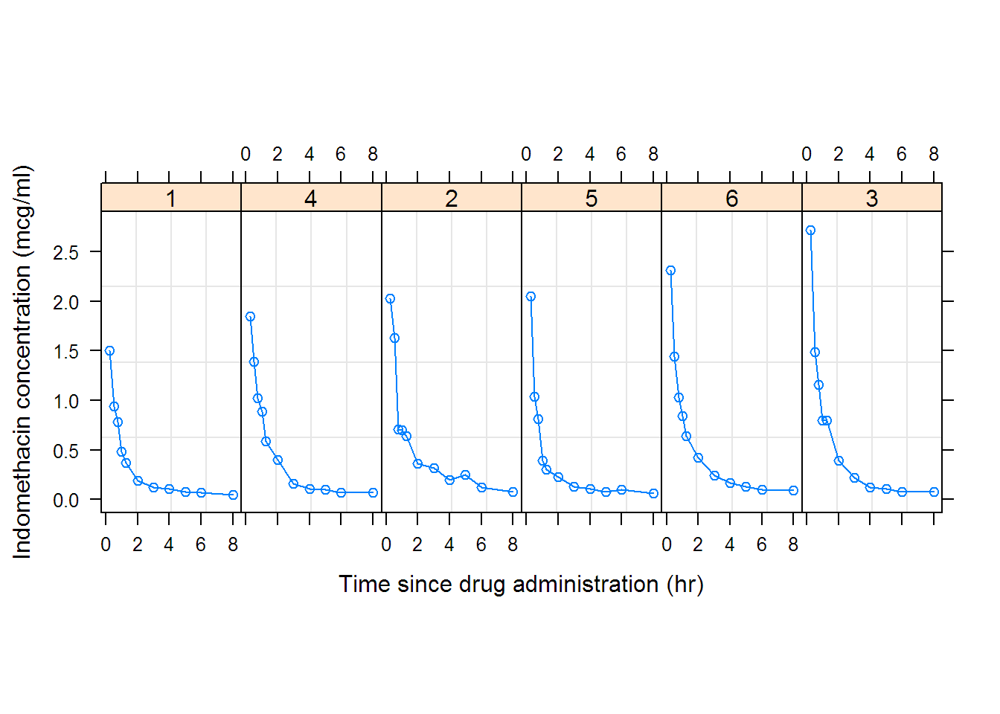
fm1Indom.nls <- nls(conc ~ SSbiexp(time, A1, lrc1, A2, lrc2),
data = Indometh)
summary(fm1Indom.nls)##
## Formula: conc ~ SSbiexp(time, A1, lrc1, A2, lrc2)
##
## Parameters:
## Estimate Std. Error t value Pr(>|t|)
## A1 2.773 0.253 10.95 4e-16 ***
## lrc1 0.886 0.222 3.99 0.00018 ***
## A2 0.607 0.267 2.27 0.02660 *
## lrc2 -1.092 0.409 -2.67 0.00966 **
## ---
## Signif. codes: 0 '***' 0.001 '**' 0.01 '*' 0.05 '.' 0.1 ' ' 1
##
## Residual standard error: 0.174 on 62 degrees of freedom
##
## Number of iterations to convergence: 0
## Achieved convergence tolerance: 3.3e-07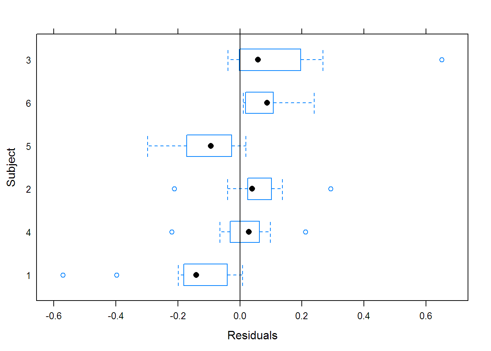
## Call:
## Model: conc ~ SSbiexp(time, A1, lrc1, A2, lrc2) | Subject
## Data: Indometh
##
## Coefficients:
## A1 lrc1 A2 lrc2
## 1 2.0293 0.57939 0.19155 -1.78778
## 4 2.1981 0.24231 0.25452 -1.60269
## 2 2.8277 0.80132 0.49892 -1.63535
## 5 3.5661 1.04077 0.29150 -1.50685
## 6 3.0022 1.08821 0.96852 -0.87314
## 3 5.4683 1.74979 1.67575 -0.41220
##
## Degrees of freedom: 66 total; 42 residual
## Residual standard error: 0.07555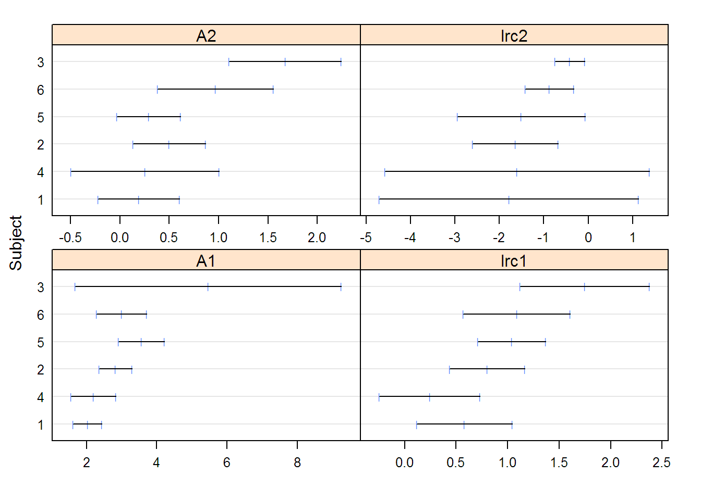
(fm1Indom.nlme <- nlme(fm1Indom.lis,
random = pdDiag(A1 + lrc1 + A2 + lrc2 ~ 1),
control = list(tolerance = 0.0001)))## Nonlinear mixed-effects model fit by maximum likelihood
## Model: conc ~ SSbiexp(time, A1, lrc1, A2, lrc2)
## Data: Indometh
## Log-likelihood: 54.597
## Fixed: list(A1 ~ 1, lrc1 ~ 1, A2 ~ 1, lrc2 ~ 1)
## A1 lrc1 A2 lrc2
## 2.82754 0.77362 0.46147 -1.34410
##
## Random effects:
## Formula: list(A1 ~ 1, lrc1 ~ 1, A2 ~ 1, lrc2 ~ 1)
## Level: Subject
## Structure: Diagonal
## A1 lrc1 A2 lrc2 Residual
## StdDev: 0.57141 0.15808 0.1116 8.5391e-06 0.081493
##
## Number of Observations: 66
## Number of Groups: 6fm2Indom.nlme <- update(fm1Indom.nlme,
random = pdDiag(A1 + lrc1 + A2 ~ 1))
anova(fm1Indom.nlme, fm2Indom.nlme)## Model df AIC BIC logLik Test L.Ratio
## fm1Indom.nlme 1 9 -91.193 -71.487 54.597
## fm2Indom.nlme 2 8 -93.185 -75.667 54.592 1 vs 2 0.0087052
## p-value
## fm1Indom.nlme
## fm2Indom.nlme 0.9257## Warning in (function (model, data = sys.frame(sys.parent()),
## fixed, random, : Iteration 1, LME step: nlminb() did not converge
## (code = 1). Do increase 'msMaxIter'!## Nonlinear mixed-effects model fit by maximum likelihood
## Model: conc ~ SSbiexp(time, A1, lrc1, A2, lrc2)
## Data: Indometh
## Log-likelihood: 58.473
## Fixed: list(A1 ~ 1, lrc1 ~ 1, A2 ~ 1, lrc2 ~ 1)
## A1 lrc1 A2 lrc2
## 2.81484 0.82928 0.56134 -1.14069
##
## Random effects:
## Formula: list(A1 ~ 1, lrc1 ~ 1, A2 ~ 1)
## Level: Subject
## Structure: General positive-definite, Log-Cholesky parametrization
## StdDev Corr
## A1 0.690446 A1 lrc1
## lrc1 0.179038 0.932
## A2 0.153714 0.471 0.118
## Residual 0.078071
##
## Number of Observations: 66
## Number of Groups: 6fm4Indom.nlme <-
update(fm3Indom.nlme,
random = pdBlocked(list(A1 + lrc1 ~ 1, A2 ~ 1)))
anova(fm3Indom.nlme, fm4Indom.nlme)## Model df AIC BIC logLik Test L.Ratio
## fm3Indom.nlme 1 11 -94.946 -70.86 58.473
## fm4Indom.nlme 2 9 -98.157 -78.45 58.078 1 vs 2 0.78937
## p-value
## fm3Indom.nlme
## fm4Indom.nlme 0.6739## Model df AIC BIC logLik Test L.Ratio
## fm2Indom.nlme 1 8 -93.185 -75.667 54.592
## fm4Indom.nlme 2 9 -98.157 -78.450 58.078 1 vs 2 6.9721
## p-value
## fm2Indom.nlme
## fm4Indom.nlme 0.0083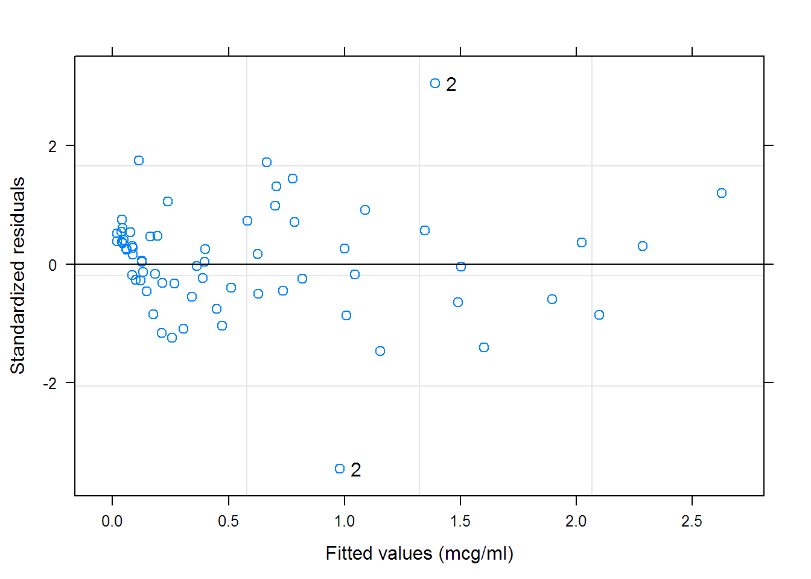
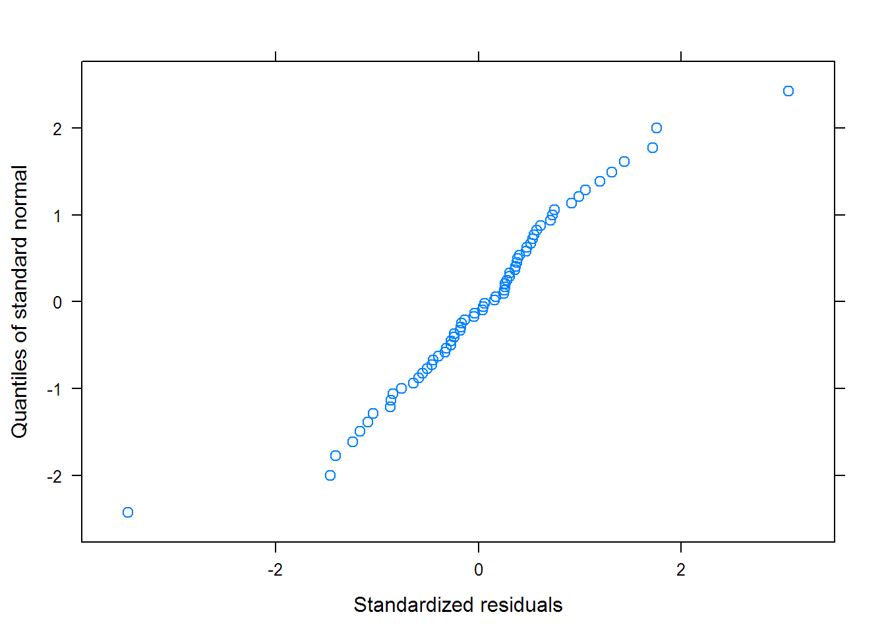
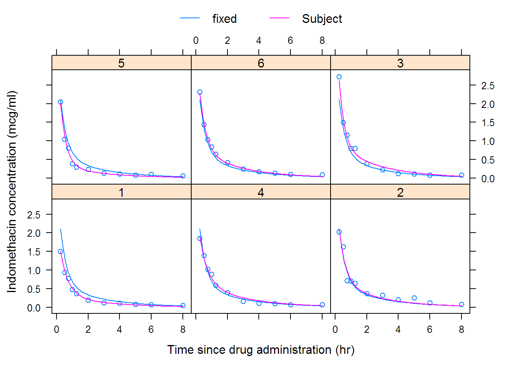
## Nonlinear mixed-effects model fit by maximum likelihood
## Model: conc ~ SSbiexp(time, A1, lrc1, A2, lrc2)
## Data: Indometh
## AIC BIC logLik
## -98.157 -78.45 58.078
##
## Random effects:
## Composite Structure: Blocked
##
## Block 1: A1, lrc1
## Formula: list(A1 ~ 1, lrc1 ~ 1)
## Level: Subject
## Structure: General positive-definite
## StdDev Corr
## A1 0.71962 A1
## lrc1 0.14867 1
##
## Block 2: A2
## Formula: A2 ~ 1 | Subject
## A2 Residual
## StdDev: 0.21294 0.0782
##
## Fixed effects: list(A1 ~ 1, lrc1 ~ 1, A2 ~ 1, lrc2 ~ 1)
## Value Std.Error DF t-value p-value
## A1 2.78306 0.32708 57 8.5087 0
## lrc1 0.89791 0.11068 57 8.1123 0
## A2 0.65779 0.14280 57 4.6063 0
## lrc2 -1.00037 0.14997 57 -6.6704 0
## Correlation:
## A1 lrc1 A2
## lrc1 0.602
## A2 -0.058 0.556
## lrc2 -0.109 0.570 0.702
##
## Standardized Within-Group Residuals:
## Min Q1 Med Q3 Max
## -3.45876 -0.43726 0.10965 0.50423 3.05716
##
## Number of Observations: 66
## Number of Groups: 6## Grouped Data: weight ~ Time | Plot
## Plot Variety Year Time weight
## 1 1988F1 F 1988 14 0.106
## 2 1988F1 F 1988 21 0.261
## 3 1988F1 F 1988 28 0.666
## 4 1988F1 F 1988 35 2.110
## 5 1988F1 F 1988 42 3.560
## 6 1988F1 F 1988 49 6.230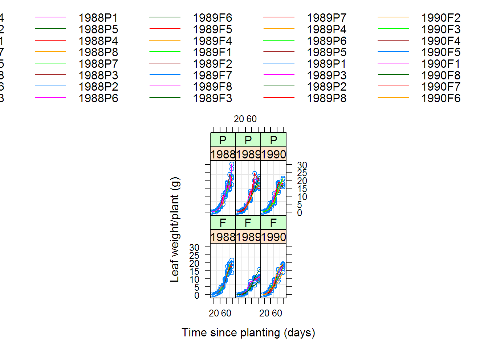
## Warning: 2 errors caught in nls(y ~ 1/(1 + exp((xmid - x)/scal)), data = xy, start = list(xmid = aux[[1L]],
## scal = aux[[2L]]), algorithm = "plinear"). The error messages and their frequencies are
##
## step factor 0.000488281 reduced below 'minFactor' of 0.000976562
## 1
## 지정된 최대 반복수 50를 초과하였습니다
## 1## Call:
## Model: weight ~ SSlogis(Time, Asym, xmid, scal) | Plot
## Data: Soybean
##
## Coefficients:
## Asym xmid scal
## 1988F4 15.1516 52.834 5.1768
## 1988F2 19.7454 56.575 8.4066
## 1988F1 20.3384 57.402 9.6047
## 1988F7 19.8712 56.162 8.0693
## 1988F5 30.6489 64.130 11.2628
## 1988F8 22.7770 59.330 9.0006
## 1988F6 23.2931 59.598 9.7188
## 1988F3 23.6971 56.425 7.6424
## 1988P1 17.3005 48.849 6.3624
## 1988P5 17.7038 51.272 6.8091
## 1988P4 24.0089 57.751 11.7447
## 1988P8 28.2496 62.980 10.9471
## 1988P7 27.4860 61.498 10.1778
## 1988P3 24.9390 56.325 8.3159
## 1988P2 36.6612 66.561 11.9161
## 1988P6 163.7029 104.973 17.9297
## 1989F6 8.5093 55.273 8.8561
## 1989F5 9.6691 51.267 7.2059
## 1989F4 11.2475 53.810 6.4866
## 1989F1 11.2511 56.626 6.0681
## 1989F2 11.2333 52.240 7.0164
## 1989F7 10.0714 51.378 5.5002
## 1989F8 10.6095 47.968 5.9609
## 1989F3 18.4196 66.124 9.2248
## 1989P7 15.4719 46.343 5.3939
## 1989P4 18.1775 57.180 8.4021
## 1989P6 20.4988 58.238 10.6135
## 1989P5 NA NA NA
## 1989P1 21.6840 59.693 9.9728
## 1989P3 22.2838 53.396 7.9006
## 1989P2 28.2970 67.175 12.5235
## 1989P8 NA NA NA
## 1990F2 19.4591 66.285 13.1572
## 1990F3 19.8679 58.278 12.7963
## 1990F4 27.4355 70.272 14.5602
## 1990F5 18.7195 51.276 7.7584
## 1990F1 19.7907 55.693 9.6170
## 1990F8 20.2904 55.549 7.7711
## 1990F7 19.8353 54.736 6.7922
## 1990F6 21.1971 54.562 9.2636
## 1990P8 18.5135 52.448 8.5810
## 1990P7 19.1608 54.802 10.8473
## 1990P3 19.1981 49.715 9.3223
## 1990P1 18.4484 47.917 6.6118
## 1990P6 17.6897 50.230 6.6269
## 1990P5 19.5449 51.150 7.2932
## 1990P2 25.7872 62.360 11.6569
## 1990P4 26.1289 61.199 10.9715
##
## Degrees of freedom: 396 total; 258 residual
## Residual standard error: 1.0209## Nonlinear mixed-effects model fit by maximum likelihood
## Model: weight ~ SSlogis(Time, Asym, xmid, scal)
## Data: Soybean
## Log-likelihood: -739.84
## Fixed: list(Asym ~ 1, xmid ~ 1, scal ~ 1)
## Asym xmid scal
## 19.2530 55.0198 8.4033
##
## Random effects:
## Formula: list(Asym ~ 1, xmid ~ 1, scal ~ 1)
## Level: Plot
## Structure: General positive-definite, Log-Cholesky parametrization
## StdDev Corr
## Asym 5.2012 Asym xmid
## xmid 4.1974 0.721
## scal 1.4047 0.711 0.958
## Residual 1.1235
##
## Number of Observations: 412
## Number of Groups: 48## Warning in (function (model, data = sys.frame(sys.parent()),
## fixed, random, : Iteration 1, LME step: nlminb() did not converge
## (code = 1). Do increase 'msMaxIter'!## Warning in (function (model, data = sys.frame(sys.parent()),
## fixed, random, : Iteration 6, LME step: nlminb() did not converge
## (code = 1). PORT message: false convergence (8)## Model df AIC BIC logLik Test L.Ratio
## fm1Soy.nlme 1 10 1499.67 1539.88 -739.84
## fm2Soy.nlme 2 11 745.71 789.94 -361.86 1 vs 2 755.96
## p-value
## fm1Soy.nlme
## fm2Soy.nlme <.0001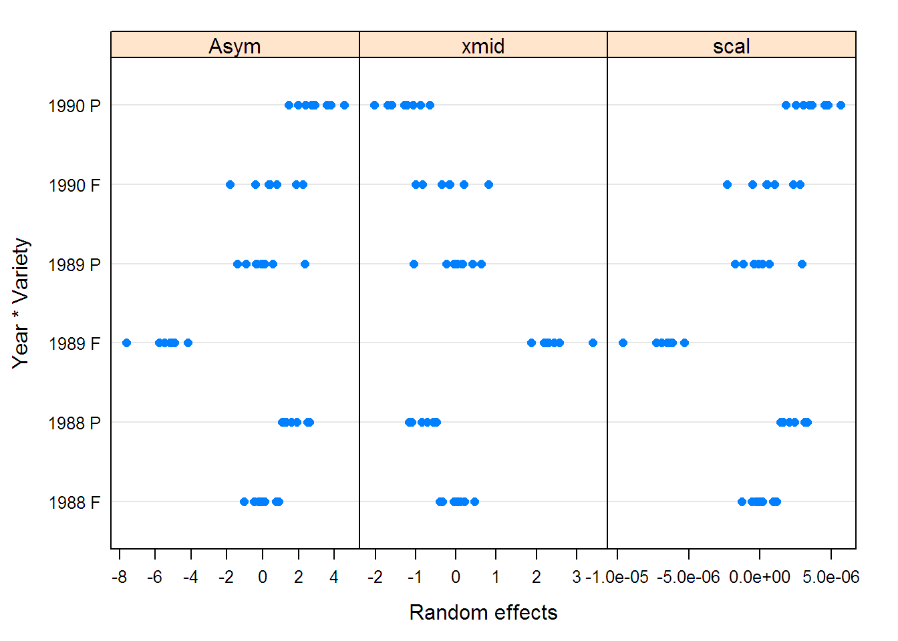
soyFix <- fixef(fm2Soy.nlme)
options(contrasts = c("contr.treatment", "contr.poly"))
(fm3Soy.nlme <-
update(fm2Soy.nlme,
fixed = Asym + xmid + scal ~ Year,
start = c(soyFix[1], 0, 0, soyFix[2], 0, 0, soyFix[3], 0, 0)))## Warning in (function (model, data = sys.frame(sys.parent()),
## fixed, random, : Iteration 1, LME step: nlminb() did not converge
## (code = 1). Do increase 'msMaxIter'!## Warning in (function (model, data = sys.frame(sys.parent()),
## fixed, random, : Iteration 6, LME step: nlminb() did not converge
## (code = 1). PORT message: false convergence (8)## Nonlinear mixed-effects model fit by maximum likelihood
## Model: weight ~ SSlogis(Time, Asym, xmid, scal)
## Data: Soybean
## Log-likelihood: -326.01
## Fixed: Asym + xmid + scal ~ Year
## Asym.(Intercept) Asym.Year1989 Asym.Year1990
## 20.20758 -6.30311 -3.46519
## xmid.(Intercept) xmid.Year1989 xmid.Year1990
## 54.09913 -2.48046 -4.84821
## scal.(Intercept) scal.Year1989 scal.Year1990
## 8.05131 -0.93200 -0.66174
##
## Random effects:
## Formula: list(Asym ~ 1, xmid ~ 1, scal ~ 1)
## Level: Plot
## Structure: General positive-definite, Log-Cholesky parametrization
## StdDev Corr
## Asym.(Intercept) 2.7111e+00 As.(I) xm.(I)
## xmid.(Intercept) 7.3512e-12 0.992
## scal.(Intercept) 1.0788e-01 0.999 0.993
## Residual 2.1626e-01
##
## Variance function:
## Structure: Power of variance covariate
## Formula: ~fitted(.)
## Parameter estimates:
## power
## 0.95011
## Number of Observations: 412
## Number of Groups: 48## numDF denDF F-value p-value
## Asym.(Intercept) 1 356 2057.4 <.0001
## Asym.Year 2 356 102.9 <.0001
## xmid.(Intercept) 1 356 11420.4 <.0001
## xmid.Year 2 356 9.4 1e-04
## scal.(Intercept) 1 356 7967.3 <.0001
## scal.Year 2 356 11.1 <.0001# The following line is not in the book but needed to fit the model
fm4Soy.nlme <-
nlme(weight ~ SSlogis(Time, Asym, xmid, scal),
data = Soybean,
fixed = list(Asym ~ Year*Variety, xmid ~ Year + Variety, scal ~ Year),
random = Asym ~ 1,
start = c(17, 0, 0, 0, 0, 0, 52, 0, 0, 0, 7.5, 0, 0),
weights = varPower(0.95), control = list(verbose = TRUE))
# FIXME: An update doesn't work for the fixed argument when fixed is a list
summary(fm4Soy.nlme)## Nonlinear mixed-effects model fit by maximum likelihood
## Model: weight ~ SSlogis(Time, Asym, xmid, scal)
## Data: Soybean
## AIC BIC logLik
## 616.31 680.65 -292.15
##
## Random effects:
## Formula: Asym ~ 1 | Plot
## Asym.(Intercept) Residual
## StdDev: 1.0359 0.21803
##
## Variance function:
## Structure: Power of variance covariate
## Formula: ~fitted(.)
## Parameter estimates:
## power
## 0.94262
## Fixed effects: list(Asym ~ Year * Variety, xmid ~ Year + Variety, scal ~ Year)
## Value Std.Error DF t-value p-value
## Asym.(Intercept) 19.434 0.95374 352 20.377 0.0000
## Asym.Year1989 -8.842 1.07212 352 -8.247 0.0000
## Asym.Year1990 -3.707 1.17700 352 -3.150 0.0018
## Asym.VarietyP 1.623 1.03824 352 1.563 0.1189
## Asym.Year1989:VarietyP 5.571 1.17084 352 4.758 0.0000
## Asym.Year1990:VarietyP 0.147 1.17570 352 0.125 0.9004
## xmid.(Intercept) 54.815 0.75475 352 72.627 0.0000
## xmid.Year1989 -2.238 0.97170 352 -2.303 0.0218
## xmid.Year1990 -4.970 0.97425 352 -5.102 0.0000
## xmid.VarietyP -1.297 0.41436 352 -3.131 0.0019
## scal.(Intercept) 8.063 0.14723 352 54.766 0.0000
## scal.Year1989 -0.895 0.20127 352 -4.448 0.0000
## scal.Year1990 -0.673 0.21217 352 -3.173 0.0016
## Correlation:
## As.(I) As.Y1989 As.Y1990 Asy.VP A.Y1989:
## Asym.Year1989 -0.831
## Asym.Year1990 -0.736 0.646
## Asym.VarietyP -0.532 0.374 0.304
## Asym.Year1989:VarietyP 0.339 -0.403 -0.249 -0.662
## Asym.Year1990:VarietyP 0.318 -0.273 -0.447 -0.627 0.533
## xmid.(Intercept) 0.729 -0.595 -0.523 -0.144 0.007
## xmid.Year1989 -0.488 0.603 0.394 -0.021 0.133
## xmid.Year1990 -0.489 0.433 0.661 -0.016 0.020
## xmid.VarietyP -0.337 0.127 0.052 0.572 -0.114
## scal.(Intercept) 0.432 -0.381 -0.345 0.023 -0.029
## scal.Year1989 -0.311 0.369 0.252 -0.025 0.090
## scal.Year1990 -0.296 0.263 0.398 -0.023 0.022
## A.Y1990: xm.(I) x.Y198 x.Y199 xmd.VP
## Asym.Year1989
## Asym.Year1990
## Asym.VarietyP
## Asym.Year1989:VarietyP
## Asym.Year1990:VarietyP
## xmid.(Intercept) -0.011
## xmid.Year1989 0.021 -0.705
## xmid.Year1990 0.054 -0.706 0.545
## xmid.VarietyP -0.057 -0.308 0.006 0.015
## scal.(Intercept) -0.031 0.817 -0.629 -0.628 -0.022
## scal.Year1989 0.023 -0.593 0.855 0.459 0.002
## scal.Year1990 0.048 -0.563 0.437 0.840 0.004
## sc.(I) s.Y198
## Asym.Year1989
## Asym.Year1990
## Asym.VarietyP
## Asym.Year1989:VarietyP
## Asym.Year1990:VarietyP
## xmid.(Intercept)
## xmid.Year1989
## xmid.Year1990
## xmid.VarietyP
## scal.(Intercept)
## scal.Year1989 -0.731
## scal.Year1990 -0.694 0.507
##
## Standardized Within-Group Residuals:
## Min Q1 Med Q3 Max
## -2.62787 -0.60802 -0.12370 0.56951 3.91853
##
## Number of Observations: 412
## Number of Groups: 48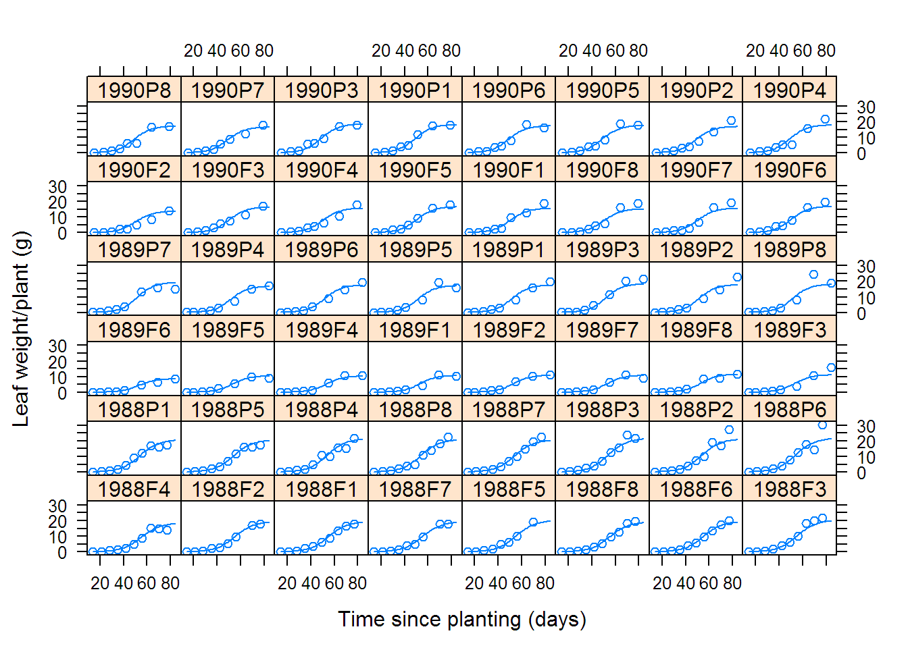
# 6.4 Clinical Study of Phenobarbital Kinetics
(fm1Pheno.nlme <-
nlme(conc ~ phenoModel(Subject, time, dose, lCl, lV),
data = Phenobarb, fixed = lCl + lV ~ 1,
random = pdDiag(lCl + lV ~ 1), start = c(-5, 0),
na.action = NULL, naPattern = ~ !is.na(conc)))## Nonlinear mixed-effects model fit by maximum likelihood
## Model: conc ~ phenoModel(Subject, time, dose, lCl, lV)
## Data: Phenobarb
## Log-likelihood: -505.42
## Fixed: lCl + lV ~ 1
## lCl lV
## -5.09324 0.34253
##
## Random effects:
## Formula: list(lCl ~ 1, lV ~ 1)
## Level: Subject
## Structure: Diagonal
## lCl lV Residual
## StdDev: 0.44021 0.45044 2.7927
##
## Number of Observations: 155
## Number of Groups: 59fm1Pheno.ranef <- ranef(fm1Pheno.nlme, augFrame = TRUE)
# FIXME: these plots encounter difficulties
plot(fm1Pheno.ranef, form = lCl ~ Wt + ApgarInd)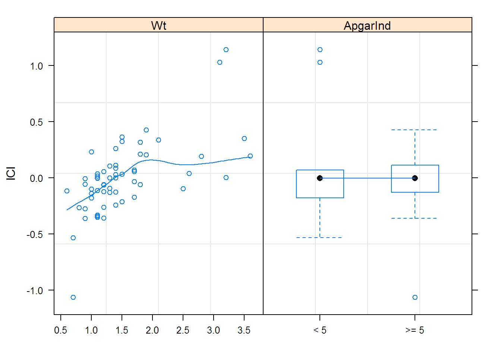
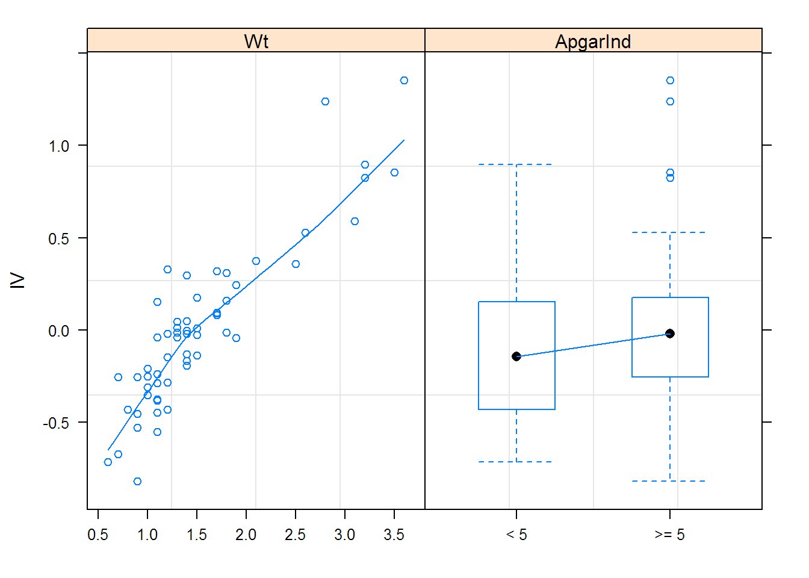
options(contrasts = c("contr.treatment", "contr.poly"))
## This fit just ping-pongs
##fm2Pheno.nlme <-
## update(fm1Pheno.nlme,
## fixed = list(lCl ~ Wt, lV ~ Wt + ApgarInd),
## start = c(-5.0935, 0, 0.34259, 0, 0),
## control = list(pnlsTol = 1e-4, maxIter = 500,
## msVerbose = TRUE))
##summary(fm2Pheno.nlme)
##fm3Pheno.nlme <-
## update(fm2Pheno.nlme,
## fixed = lCl + lV ~ Wt,
## start = fixef(fm2Pheno.nlme)[-5])
##plot(fm3Pheno.nlme, conc ~ fitted(.), abline = c(0,1))
# cleanup
proc.time()## user system elapsed
## 74.02 2.80 82.25